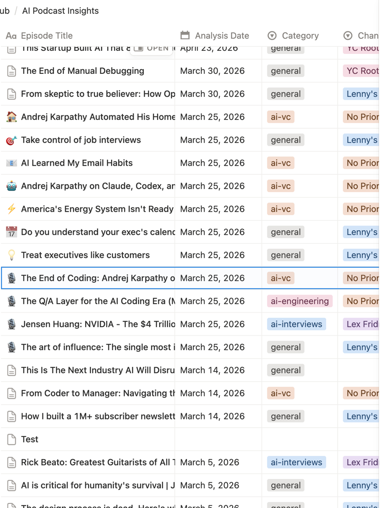
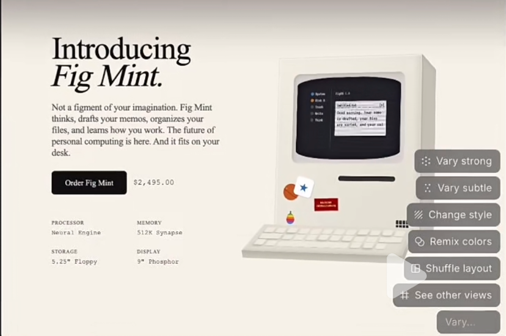
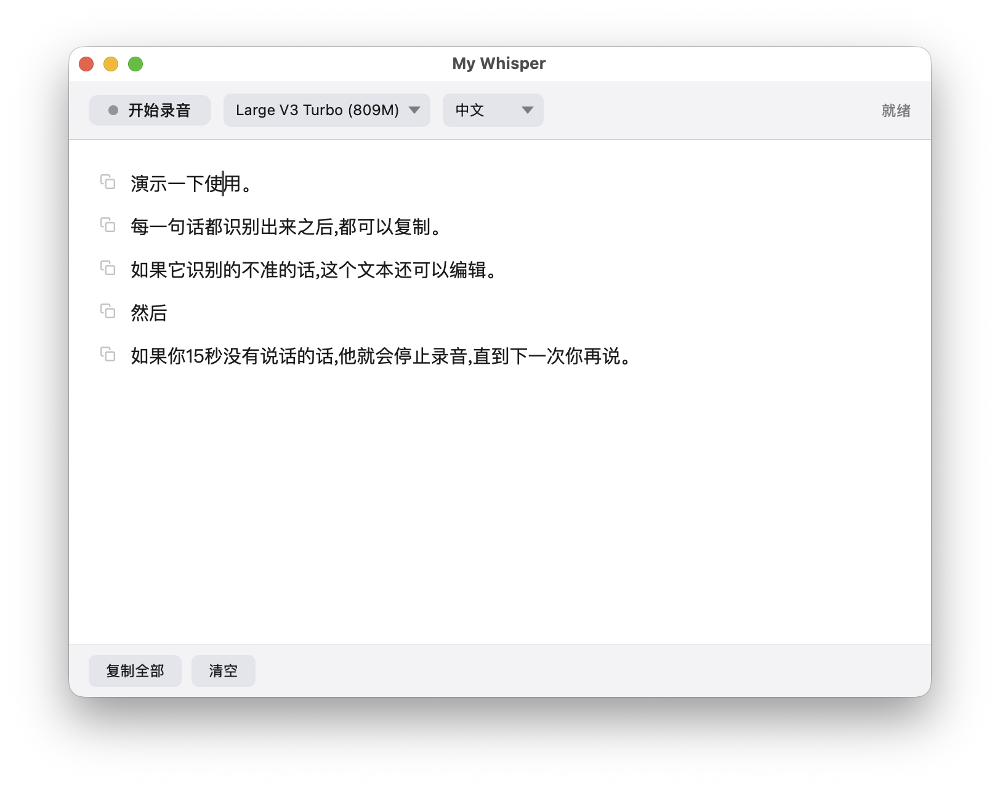

____ _ _ ____ _ __ ____ _ _ _ ____ _____ ____ | __ )| | | |/ ___| |/ /| _ \ / \ | \ | |/ ___| ____| _ \ | _ \| | | | | | ' / | | | |/ _ \ | \| | | | _| | |_) | | |_) | |_| | |___| . \ | |_| / ___ \| |\ | |___| |___| _ < |____/ \___/ \____|_|\_\|____/_/ \_\_| \_|\____|_____|_| \_\
ls ~/github.com/ianbuckman/
// featured repos — see all on github ↗

▸ live · python
ai_podcast/
在 Claude Code 里用自然语言管理 AI/科技播客订阅 —— 自动发现新集、分析字幕、提炼洞察并推送到 Notion。

▸ live · skill
ai_ppt/
一个 Claude Code Skill,把文章/文档一键转成专业演示文稿 —— 12 套视觉风格、15 种幻灯片版式,输出可直接打开的 Reveal.js HTML。

▸ live · macos
my-whisper-17/
macOS 本地实时语音转文字,基于 MLX Whisper 在 Apple Silicon 上高效运行,数据全程本地处理。
whoami
buck dancer — software engineer based in Shenzhen.
coding for ~10 years, now doing AI agent EVALS.
cat ~/about.yml
- role
- sde @ bytedance · ai agent evals
- location
- shenzhen, cn
- languages
- python, typescript, swift, 中文, english
- github
- @ianbuckman
- mailbox
- to be added
tail -n 1 ~/writing.log
// latest posts — en & zh
to be added
_